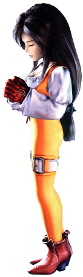

The Golden Age of Final Fantasy
DISCLAIMER: A personal opinion!...but true

"The best collection of Final Fantasy games. Fact!"
Final Fantasy VII
Final Fantasy VII is the seventh main installment in the Final Fantasy series, developed and published by Squaresoft. It was released in January 1997 for the PlayStation, and was later re-released for the Microsoft Windows, PlayStation 3, PlayStation Portable, PlayStation Vita, PlayStation 4, iOS, Android, Xbox One and Switch platforms, it is also included on the PlayStation Classic mini console. It was directed by Yoshinori Kitase, produced by Hironobu Sakaguchi, with a score produced by Nobuo Uematsu and character designs by Tetsuya Nomura. It was the first title in the series to feature three-dimensional graphics, pre-rendered backgrounds and numerous full motion videos, and the first to be released in Europe.
Final Fantasy VII follows the story of mercenary Cloud Strife, who is hired by the eco-terrorist group AVALANCHE—led by Barret Wallace—to help fight the mega-corporation Shinra Electric Power Company, who attempts to drain the planet's lifeblood as an energy source to further their profits. Apathetic to the cause, Cloud initially fights for personal gain, and for the promise he made to childhood friend Tifa Lockhart. Cloud eventually joins forces with many others to save the planet, which is threatened by Shinra and Cloud's nemesis Sephiroth, and discovers a reason to fight for a cause other than his own.
Characters
-
Cloud Strife is the main protagonist, introducing himself as a former member of SOLDIER who now operates as a mercenary. Cloud is caught up in the actions of eco-terrorist group AVALANCHE, and although initially uncaring toward their mission, he has a change of heart when he begins to discover his shrouded past.
-
Barret Wallace, the leader of AVALANCHE who wields a gun on his right arm in place of his injured hand. Despite his brash and loud-mouthed personality, he is a caring person and loves his daughter Marlene.
-
Tifa Lockhart, Cloud's childhood friend and member of AVALANCHE, runs the bar 7th Heaven in the Sector 7 slums, which serves as the group's hideout. Her sympathetic exterior hides fearsome fighting skills.
-
Aeris Gainsborough, a flower girl from the Sector 5 Slums who befriends Cloud. Cloud's resemblance to someone she used to know mystifies Aeris, and she joins him and AVALANCHE on their quest to discover more about her heritage.
-
Red XIII, is a quadrupedal, flame red beast capable of speech. The party rescues him from capture by Shinra. He speaks little, but when he does, his words are often important.
-
Cait Sith, a robotic cat atop a stuffed Mog, operates as a fortune teller at the Gold Saucer. He shouts commands to his Mog in battle using a megaphone.

-
Cid Highwind, the foul-mouthed, chain-smoking pilot of Rocket Town dreams of being the first man in space. His dreams were foiled when he was forced to abort the mission. Despite his bitter attitude, Cid has a good heart and cares about his friends.
-
Yuffie Kisaragi, first encountered as the Mystery Ninja, can be randomly encountered in any forest. A self-professed Materia hunter, she is sneaky and playful, and "hunts" Materia to restore her home of Wutai to its former glory.
-
Vincent Valentine, discovered sleeping in a coffin at Shinra Mansion in Nibelheim, is a former Turk with a traumatic past. After being subjected to numerous experiments, Vincent became able to transform into monstrous forms, but sealed himself in the coffin due to guilt in his past. Like Red XIII, he speaks little but offers helpful advice when he does.

Final Fantasy VIII
Final Fantasy VIII is the eighth main installment in the Final Fantasy series, developed and published by Squaresoft. It was released in February 1999 for the PlayStation, and has since been re-released on Microsoft Windows in 2000, with this version being ported to Steam in 2013. A remastered version was released September 3rd[2], 2019 on Nintendo Switch, PlayStation 4, Xbox One and PC via Steam.
Final Fantasy VIII was directed by Yoshinori Kitase, with Tetsuya Nomura providing the character design and Nobuo Uematsu composing the musical score. It is the first game in the series to consistently use realistically proportioned characters, and the first to feature a vocal piece as its theme music in the form of "Eyes on Me".
Final Fantasy VIII is set on a fantasy world with science fiction elements, and focuses on Squall Leonhart, a young SeeD mercenary hired out to various missions by Balamb Garden. Squall and his friends are enlisted to help a group known as the Forest Owls led by Rinoa Heartilly, an endeavor that escalates into a conflict against the forces led by Sorceress Edea.
Characters
-
Squall Leonhart - The taciturn and reluctant hero. A lone wolf, he is known as a fearsome warrior in training, specializing in the rare gunblade. Though aloof and seemingly detached, he grows to appreciate his friends and love Rinoa, evolving into a model leader for his peers. His tagline is "...Whatever".
-
Rinoa Heartilly - A beautiful and spirited young woman who abandoned a privileged lifestyle to join a resistance movement. Owns a faithful pet dog, Angelo.
-
Quistis Trepe - A top-notch member of SeeD who serves as Squall's instructor. Though beautiful and popular, she is insecure. She overcomes this through her caring for Squall and her friends.
-
Zell Dincht - A Balamb Garden student with unsurpassed martial arts skill who has a passion for hot dogs. In spite of his loud-mouthed attitude, Zell strives to be a model cadet.
-
Selphie Tilmitt- A spunky young woman with a carefree spirit. Transferred from Trabia Garden, she tends to overcompensate her sad past with a happy disposition.
-
Irvine Kinneas - An expert gunman and consummate ladies' man. Despite his facade, Irvine is determined, caring and sensitive man, and the only one who knows the hidden connection between all the members of the group.
Final Fantasy IX
Final Fantasy IX is the ninth main installment in the Final Fantasy series, developed and published by Squaresoft. It was released in July 2000 for the PlayStation, later re-released in 2016 for iOS, Android and Microsoft Windows via Steam; re-released in 2017 for PlayStation 4; and repackaged in 2019 for Windows 10, Xbox One, and Nintendo Switch. It was directed by Hiroyuki Ito and co-produced by Hironobu Sakaguchi and Shinji Hashimoto, with Nobuo Uematsu providing the musical score. The title is a return to the series's roots, with gameplay features and references to the past games featuring throughout, as well as a medieval fantasy setting and cartoonish art style as a break from the sci-fi slant style of Final Fantasy VII and Final Fantasy VIII.
Taking place on planet Gaia, the story follows a thief named Zidane Tribal, a member of a thief troupe who is tasked to kidnap the princess of Alexandria, Garnet Til Alexandros XVII. He teams up with her and a team of allies to stop Queen Brahne and her ally Kuja from waging a war with an army of black mages.
Characters
-
Zidane Tribal: The main protagonist. A thief, member of the Tantalus Theater Troupe, and an inveterate womanizer. Zidane is laid-back, casual, outgoing, and generally friendly to those around him. He is flirtatious with women, but develops feelings for Garnet specifically. When the situation calls for it, he can be more serious, particularly in the face of danger. Zidane cares for those around him, often offering them advice on life, and is selfless in his actions.
-
Garnet Til Alexandros XVII: The sheltered princess of Alexandria, naive to the ways of the world and burdened by the knowledge that she must one day ascend the throne. Hiding her identity while traveling with Zidane, Garnet takes the alias Dagger, inspired by Zidane's weapon. Initially polite and soft-spoken, and naive to the world outside her castle, Garnet loosens up during her travels, and becomes more streetwise. She resolves to use her powers as a summoner to protect her kingdom, and becomes more assertive and less dependent on others for help.
 -
Vivi Ornitier: Vivi appears at first to be gullible, clumsy, and shy, often stumbling over his speech lacking self-confidence. He is fearful of his powers, origins, and his own lifespan. Over time, he gains bravery and confidence, as well as a sense of right and wrong. Vivi befriends Zidane, who acts like an older brother to him, and resolves to use his magic to protect his new friends.

-
Adelbert Steiner: A noble knight of Alexandria, and the captain of the Knights of Pluto. Severe to his enemies, but eternally loyal to his friends. He is polite and well-spoken when addressing others, particularly those whom he respects, though he scorns those who he does not. Nonetheless, he will reluctantly put aside his dislike of common thieves for Princess Garnet's sake.
-
Freya Crescent: A Burmecian Dragon Knight, a race of anthropomorphic rats who live in two cities, Burmecia and Cleyra. She hails from Burmecia, but left several years ago in search of her lost love, Sir Fratley. Zidane meets her in Lindblum just before the Festival of the Hunt.
-
Quina Quen: A Qu and an apprentice gourmand who joins the adventure to experience cuisine from around the world. They speak in broken English, as all Qu do, and will often eat anything they see. Quina's eating habits are one of their greatest skills, as Quina learns Blu Mag by consuming an enemy.
-
Eiko Carol: She hails from Madain Sari on the Outer Continent. She has a horn on her forehead and can summon eidolons. A young summoner who is one of the last of her tribe.
-
Amarant Coral: A wanted bandit who accompanies Zidane to discover what makes him powerful.